Group Assignment 3: Laplacian Meshes (100 Points)
By Chris Tralie
Click here to see art contest results!
- Overview
- Laplacian Mesh Editing
- Spectral Representations / Heat Flow
- Parameterization / Texturing
- Art Contest
Overview
For the grand finale of the course, students will use Python/Numpy to implement the Laplacian mesh representation, which is a differential operator on the surface of the mesh which approximates the Laplacian of functions on the surface of the mesh. The Laplacian is something like the second derivative along the surface of a function at every point of the mesh, as discussed in class. This representation can be used for a diverse array of tasks in nonrigid geometry processing, such as nonrigid shape editing ("Laplacian mesh editing"), surface function interpolation, compression/denoising, and texture mapping ("uv unwrapping"), to name a few. Students will have an opportunity to implement all of the above operations in this assignment, and this should lead to a rich art contest.- This assignment was inspired by COS 526 Advanced Computer Graphics: Assignment 2, Fall 2010. Click here to see my writeup for that assignment when I was an undergraduate. I went into a lot of detail, so it will likely help you with your development.
Deadlines / Points
As usual, groups of 1-2 have to earn 100 points, and groups of 3 have to earn 120 points. There will be an intermediate deadline at 11:59PM on Monday 4/18, which is to finish Laplacian Mesh Editing and Cotangent Weights. There will be a 15 point penalty for missing this deadline. The final deadline for the assignment will be on Wednesday 4/27 at 11:59PM.Code Layout / Hints
Click here to download the code for this assignment
You will be filling in code in the fileLaplacianMesh.py, and you will be testing it with a GUI in a file named LapGUI.py. This code runs on a library I made for dealing with meshes in Python called S3DGLPy (the same library that was used to load and sample meshes for the point cloud classification assignment). All of the code you write will be operating on a Python object of type PolyMesh. For this assignment, here's what you need to be aware of:
- All of the vertices are stored in an array
mesh.vertices. Each vertex has a fieldvertex.IDwhich stores its position in the list. So for instance,mesh.vertices[10].IDis 10 - Each vertex has a function
vertex.getVertexNeighbors()which returns a Python array of the 1-ring neighbors of this vertex, not necessarily in any order - The geometry for all of the vertices is stored in an N x 3 numpy array
mesh.VPos, which is parallel to the arraymesh.vertices. This is the array that you should multiply on the left by the laplacian matrix to get the delta coordinates, and it's also the array you should update after you solve the least squares Laplacian mesh system. Note that points are each along rows now instead of columns in the ordinary convention - If two vertices share a neighbor, then passing the corresponding two vertex objects to the function
getEdgeInCommon(v1, v2)returns aMeshEdgeobject representing their edge, orNoneif they don't share an edge. - Each
MeshEdgeobject has two fieldsf1andf2representing the faces on either edge of that edge. Each face is an object of typeMeshFace. If the edge is along the boundary, then one or the other will beNone. To check to see if f1 is None, for example, the syntax in Python isif edge.f1: print "f1 is not null" if not edge.f1: print "f1 is null" -
Each
MeshFaceobject has a functionface.getVertices()which returns the vertex objects of that face, not necessarily in any particular order
-
You can check to see if two objects are equal in python with
==
- When multiplying an ordinary matrix by a sparse matrix, the return type is
numpy.matrixinstead ofnumpy.arrayfor some reason. So be sure to case the results as anumpy.array, which is what the rest of the code is expecting. For instance, if you have the Laplacian matrix in a sparse matrix L, then a multiplication by the vertices should be written asdelta = np.array(L.dot(mesh.VPos))
Laplacian Mesh Editing
Note: These laplacian matrices are known to be extremely ill-conditioned, so be sure to fix multiple anchor points where you don't want the surface to moveBasic Laplacian Mesh Editing (20 Points)
- Fill in the functions
getLaplacianMatrixUmbrella(mesh, anchorsIdx)andsolveLaplacianMesh(mesh, anchors, anchorsIdx)
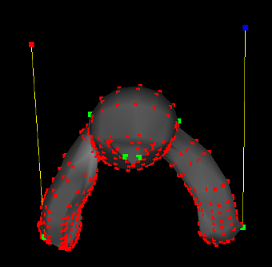
Then, when you are done, click
MeshLaplacian->Solve With Constraints
Hints:
- If
I, J, andVare parallel numpy arrays that hold the rows, columns, and values of nonzero elements, respectively, and the matrix is of size M x N, then the following code makes this into a scipy sparse matrix:L = sparse.coo_matrix((V, (I, J)), shape=(M, N)).tocsr()
-
If you have a system of equations Ax = b and A is a sparse matrix, then you can solve it by calling sparse least squares
x = scipy.sparse.linalg.lsqr(A, b)[0]
(and actually you can just writelsqrbecause I imported it in the starter code)
- This system of equations is known to have very poor conditioning. Because of this, you should fix several anchors all over the mesh where you want it to stay stationary, in addition to the ones you want to move, to see the best results
Cotangent Weights (20 Points)
- Fill in the function
getLaplacianMatrixCotangent(mesh, anchorsIdx)
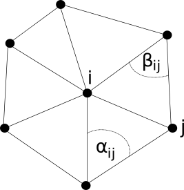
You can assume that this is a triangle mesh so that there is exactly one vertex across a face from an edge. Then, change your
solveLaplacianMesh() function so that it uses cotangent weights instead of umbrella weights, and highlight the difference on at least one mesh in your README.
Hints:
- The cotangent is cosine over sine. Recall that
\[ \vec{u} \cdot \vec{v} = ||\vec{u}|| || \vec{v} || \cos(\theta) \]
and
\[ ||\vec{u} \times \vec{v}|| = ||\vec{u}|| || \vec{v} || \sin(\theta)\]
See if you can use this fact to help you to get the cotangent (be sure to make use of the command
np.cross)
- Cotangent weights aren't a cure-all, especially when there are a lot of obtuse triangles (since the weights will be negative in that case). So if you see bad results on a particular mesh, don't despair...switch back to umbrella. They should at least improve the results on the homer mesh, though, as shown in class, and they should perform better for smoothing/sharpening below
Smooth Function Interpolation / Mesh Coloring (10 Points)
- Fill in the function
smoothColors(mesh, colors, colorsIdx)
colors is passed along with the RGB values at the indices colorsIdx, and you need to fill in the rest of the colors by doing this function smoothing/completion for each color channel. Below shows an example:| 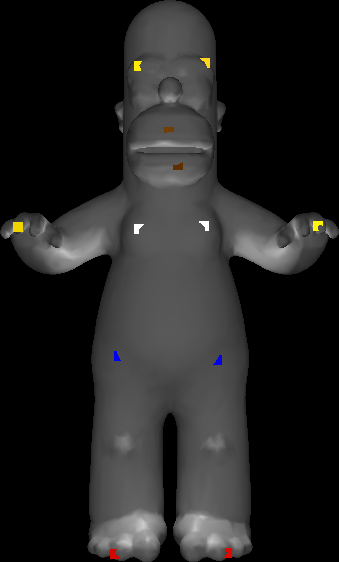 | 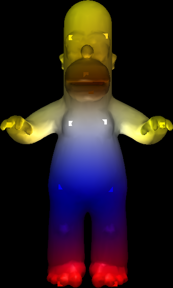 |
MeshColoring->Select Color Vertices. Hold down SHIFT + Left Click to select vertices you want to color, just as you did for the Laplacian mesh editor. And then choose their color by holding down CTRL + Left click and clicking on a color in the lower left in the color chooser that's popped up: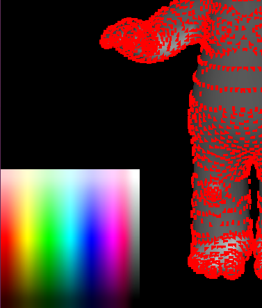
when you've chosen the colors you want, click
MeshColoring->Interpolate Colors to test your code
Hints:
- The code for this should be incredibly similar to the code you wrote to do laplacian mesh editing. You just have to change the delta coordinates to be zero, and the functions on the surface are color channels instead of vertex coordinates (but they can all just be thought of as functions)
Mesh Sharpening / Smoothing (10 Points)
- Fill in the functions
doLaplacianSmooth(mesh)anddoLaplacianSharpen(mesh). You can test these by clickingMeshLaplacian->Laplacian Smooth/Sharpen(no anchors needed)
Minimal Surfaces (10 Points)
- Fill in the function
makeMinimalSurface(mesh, anchors, anchorsIdx). You can test this by placing anchors and clickingMeshLaplacian->Minimal Surface
NOTE: For this task, it will work better if instead of having anchors at the bottom, you overwrite the corresponding rows of the upper square laplacian matrix with the anchor rows, and you should do this. So for instance, if you want to anchor a point at index 100 with the position (a, b, c), then row 100 of L should contain all zeros except for a 1 at column 100, and row 100 of the "delta coordinates" should be (a, b, c). The rows corresponding to non-anchor vertices should still be as before, representing the Laplacian at that vertex. Below is an example of the result I got when anchoring the 8 corners of the high resolution cube mesh that way:
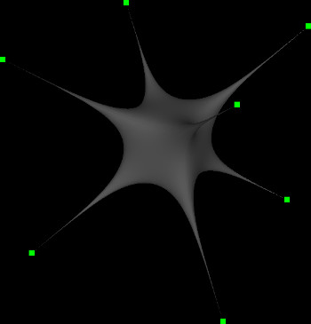
Spectral Representations / Heat Flow
Laplacian Spectrum (10 Points)
- Fill in the function
getLaplacianSpectrum(mesh, K)
| 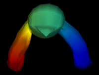 | 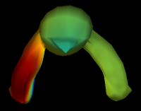 | 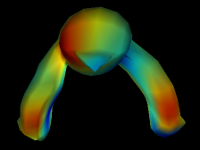 |
MeshLaplacian->GetSpectrum. This code will save SPECTRUM_K modes to a series of .off files "spectrumX.off", where X ranges from 0 to SPECTRUM_K-1. SPECTRUM_K is a constant which is defined at the top of the GUI (default 20), which you can change. You can view the different modes by loading them into the GUI or by looking at them in meshlabIn your readme, explain what you're seeing as you transition from eigenvectors which have small eigenvalues to those which have larger ones.
- As explained in this Stackoverflow post, to get the K smallest eigenvectors/eigenvalues of a sparse, symmetric matrix A, you should use the command
(eigvalues, eigvectors) = scipy.sparse.linalg.eigsh(A, K, which='LM', sigma = 0)
Lowpass Geometry Filtering (10 Points)
- Fill in the function
doLowpassFiltering(mesh, K)
UK be a matrix with the first K eigenvectors in the columns of the matrix, and let V be a matrix with the x coordinates of all of the vertices along the first column, the y coordinates along the second column, and the z coordinates along the third column. Then you can project the coordinates of the geometry onto them with
\[ V' = U_K U_K^T V \]
Show that you can denoise homernoise.off with this technique. Also show a screenshot on at least one other mesh (lowpassing with very few frequencies looks quite interesting, as shown in class). You can vary the number of eigenvectors you choose by editing the variable LOWPASS_K at the top of the GUI file. Its default value is 20, which is quite low (it takes up to 500 for homer to start looking reasonable, for example, as shown in class)
Heat Flow (15 Points)
- Fill in the function
getHeat(mesh, eigvalues, eigvectors, t, initialVertices, heatValue = 100.0)
\[ f(t) = \sum_k (f_0^T \phi_k) e^{-\lambda_k t} \phi_k \]
where \phik is the kth eigenvector and \lambdak is the associated eigenvalue of the laplacian matrix. Given an initial set of point locations "initialVertices," apply "heatValue" amount of heat to them at the beginning of time, and return the amount of heat on all the vertices at time t according to the above equation.To test this, click on
MeshLaplacian->Do Heat Flow Simulation. This will output a bunch of files called heatX.png, where X ranges from 0 to 89 (so you can use this to make a 90 frame vide). To change the number of eigenvectors/eigenvalues used in the computation, feel free to change the variable HEAT_K at the top of the GUI. The more you use, the better the approximation will be for the initial heat distribution (though it won't matter so much after the first few frames since heat dissipates exponentially quickly). Below is an example of selecting the initial conditions as heat on the tips of Homer's 8 fingers| Selecting Initial Heat Vertices | Heat Flow Animation |
| 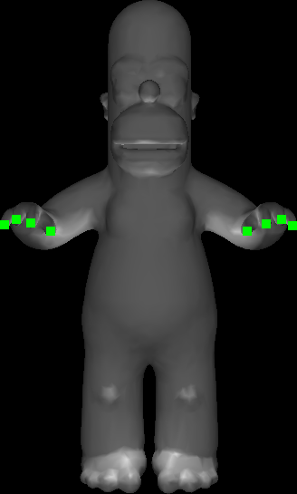 |
Hints:
- The eigenvalues and eigenvectors passed along are precomputed using your code in
getLaplacianSpectrumto save computation running the heat simulation
Heat Kernel Signature (10 Points)
- Fill in the function
getHKS(mesh, K, t)
\[ h_t[i] = \sum_k e^{-\lambda_k t} \phi_k[i]^2 \]
The larger the t, the more the curvature estimate is "regularized" (smoothed out). You can change the variablesHKS_K and HKS_T, to change the number of eigenvectors used in the estimate and the time, respectively. Below shows a screenshot of two different times used on the homer mesh
| t = 20 | t = 500 |
| 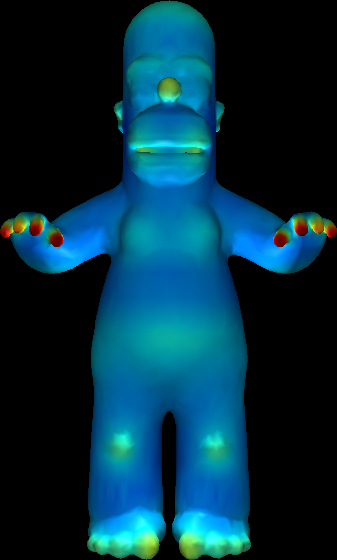 | 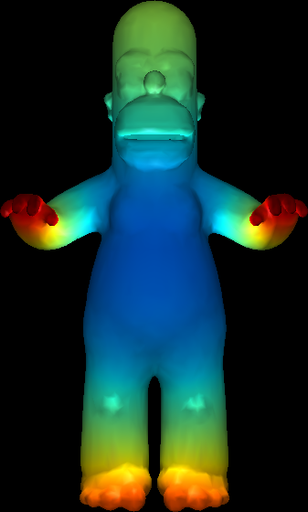 |
Notice how for a smaller t, the curvature on the original fingers is resolvable, whiel in the smoothed version the whole hand contributes to one large curved region all merged together.
Parameterization / Texturing
Mesh Flattening (20 Points)
- Fill in the function
doFlattening(mesh, quadIdxs)
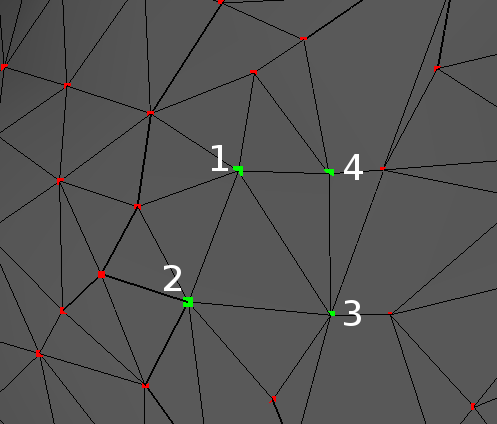
Then, build your laplacian matrix, ignoring the edge that connects the two triangles (effectively removing the two triangle faces from the mesh). Then, set all of the delta coordinates to zero, but put anchors of the four points at (0, 0, 0), (0, 1, 0), (1, 1, 0), and (1, 0, 0). You will want to overwrite rows in the upper square matrix instead of putting the anchors at the bottom, as you did in the minimal surfaces task, and you will also want to use umbrella weights instead of cotangent weights as explained in my undergraduate writeup. When you do all of this and solve the system, the points will try to be the average of their neighbors, and this will have the effect of flattening everything inside of the unit square in the XY plane. Below shows two views of doing this on the homer mesh:
| 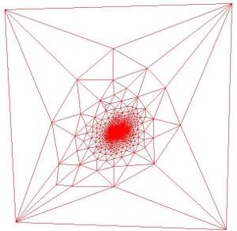 | 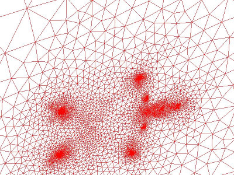 |
You can test your code out by clicking
MeshLaplacian->Do Flattening
Texture Mapping (10 Points)
- Fill in the function
getTexCoords(mesh, quadIdxs)
MeshLaplacian->Compute UV Coordinates, the GUI will automatically render a texture on your mesh using the UV coordinates you have. The texture will be whatever you put in the image texture.png (by default, a checkerboard).{kind=link}
Hints:
- You're basically just reusing your code from above but returning the texture coordinates separately instead of updating the geometry. Just make sure all of your texture coordinates are actually in the unit square